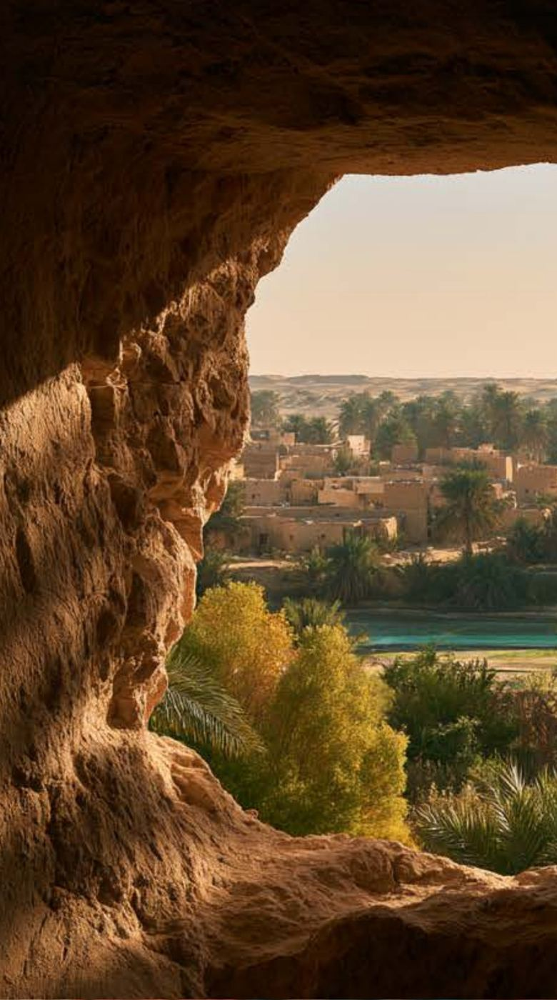
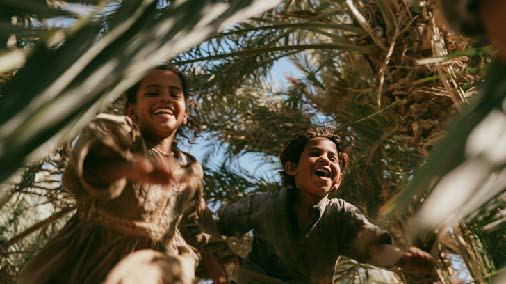
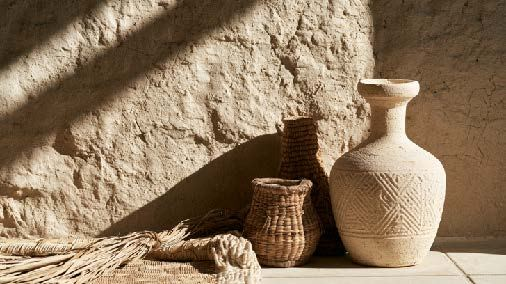
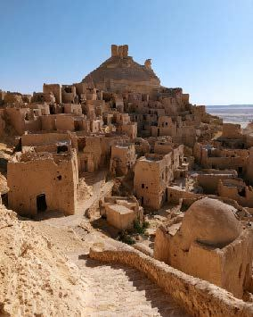
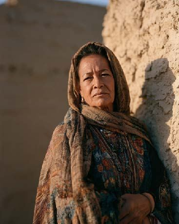
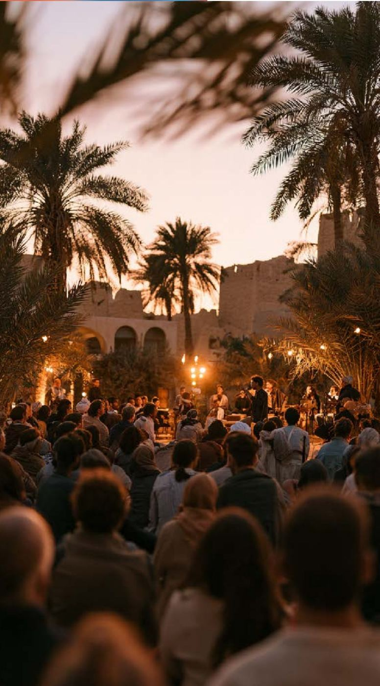
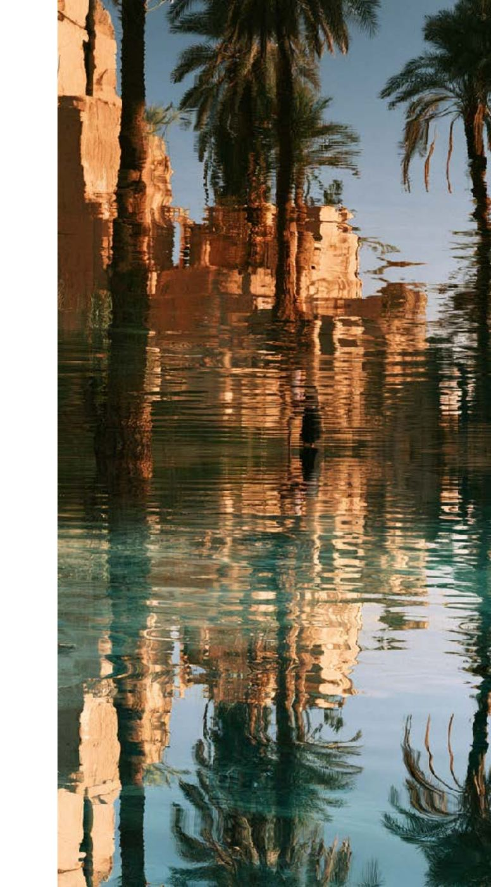

سيوة.. فرصة للتعارف والمشاركة

الاحتفال بسيوة عاصمةً للثقافة في العالم الإسلامي فرصة للتعريف بثقافتها، وإشراك أهلها في تقديم حكاياتهم وفنونهم ومعارفهم لجمهور أوسع.
عام يفتح أبواب سيوة للتبادل الثقافي، ويؤسس لتعاون يستمر أثره بعد ٢٠٢٧.
سيوة.. ثقافة يعيشها أهلها
إزاي نخلّي الناس يعيشوا حاجة من ثقافة سيوة، بمشاركة أهلها؟ من التفاصيل دي اتبنت المسارات الأربعة.

الحكايات واللغة والذاكرة الشفوية

الحرف ومهارات الصنع والزخارف

العمارة والخامات والطبيعة

الفنون والعادات والمعارف المتوارثة
نعيش سيوة سوا

دعوة تجمع أهل سيوة وباقي مصر وشعوب العالم الإسلامي سوا في تجربة ثقافية مشتركة، نتعرّف فيها على سيوة، ونعيش حكاياتهم وثقافتهم.
«سوا» يعني أهل سيوة معانا بثقافتهم وصوتهم ومشاركتهم، وإننا بنلتقي على اختلاف بلادنا.
«نعيش» يعني التجربة تبقى جزء من ذاكرتنا: نحملها معانا، ونحكي عنها، ونحب نرجع لها.

سيوة.. حضور يستمر بعد ٢٠٢٧
نطمح أن يكون ٢٠٢٧ بداية علاقة ممتدة لمصر مع الدول الإسلامية، بوابتها سيوة: نعيش التجربة داخل الواحة وفي أنحاء مصر، ويفتح العام فرص لأهل سيوة يعرضوا فنونهم ويعلّموا مهاراتهم ويسوّقوا منتجاتهم.
نجاح العام: إن سيوة تفضل حاضرة بعد ٢٠٢٧، كوجهة نفتكرها ونحب نزورها ونرجع لها.
حكاية واحدة.. أربع مسارات
السنة رحلة.. مش قائمة فعاليات
أربع مراحل بتوصّل المواطن من إنه يسمع عن سيوة، لحد ما يعيشها معانا في آخر السنة.
نعلن العام في معرض الكتاب ونفتح الدعوة.
الافتتاح والمكان والحكي: يتعرف على سيوة وأهلها.
الحرف والصيف والسما والحصاد: يجرّب بإيده.
عيد الصلح والضيوف والختام: يعيش سيوة سوا.
١٢ شهر.. ١٢ حكاية
اسم كل شهر جاي من مناسبة حقيقية في سيوة أو في السنة. اختار شهر وشوف ليه اسمه كده، والمواطن هيكسب إيه، وكل فعالياته.
المطلوب من كل قطاع
اختار قطاعك: هتلاقي فعالياته بمواعيدها وأماكنها، والبرامج اللي بيشارك فيها، والناقص اللي محتاج رد منه.
| الميعاد | الفعالية والمكان | البرنامج |
|---|
كلنا شركاء في البرنامج
كل قطاع صاحب فعالياته، والقطاعات اللي بتشتغل في نفس البرنامج شركاء متساويين، والتنسيق في لجنة واحدة وغرفة واحدة في سيوة.
بيخطط وينفّذ فعالياته، وهو المرجع في موعدها ومكانها ومحتواها.
القطاعات اللي عندها فعاليات في نفس البرنامج بتتنسق كأطراف متساوية، واجتماع البرنامج بيستضيفه القطاع اللي فعاليته قرّبت.
ممثل من كل قطاع ومعاهم الإعلام والسياحة. اجتماع شهري بيراجع الشهر الجاي قبلها بـ ٣٠ يوم، وأي تغيير في الجدول بيعدّي عليها.
في بيت ثقافة سيوة: الأماكن والتصاريح، والتواصل مع الأهالي والفرق المحلية، واستقبال فرق القطاعات.
تنفذهم الهيئة العامة لقصور الثقافة بمشاركة كل القطاعات، وكل قطاع ليه فقرة أو معرض في الحفلين.
دور جامع للسنة كلها: بيحكوا ويروّجوا فعاليات كل القطاعات، من غير فعاليات خاصة بيهم.
صوتنا سوا.. الإطار اللي بيحيط بالسنة
- المؤتمر الصحفي لإطلاق العام في معرض الكتاب
- الهوية الإعلامية «نعيش سيوة سوا»
- تغطية فعاليات العام والحملات الشهرية
- رحلة صحفيين وصنّاع محتوى من الدول الإسلامية
- إعلان عناصر الإرث في الختام
- الترويج السياحي والمحتوى التعريفي بسيوة
- تسهيلات المشاركين والضيوف عبر مكاتب الهيئة
- إدراج الفعاليات في برامج شركات السياحة
- حملة لسيوة في يوم السياحة العالمي ٢٧ سبتمبر
نبدأ من النهارده
- استلام ملف القطاع والبوكليتفيه برامجكم وجدولكم والناقص والالتزامات.
- مراجعة الخانات الصفرااليوم والمكان المقترحين: أوافق أو أعدّل.
- تسمية ممثل للقطاعفي لجنة التنسيق الموحدة، ونقطة اتصال واحدة.
- رجوع الملف خلال أسبوعيننجمع الردود ونطلع الجدول النهائي المعتمد.
- العرض على الوزيربعد موافقة القطاعات: البرنامج والجدول للاعتماد، وبعده الإعلان للجمهور.